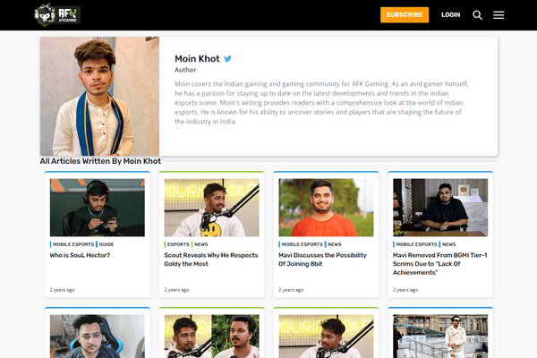
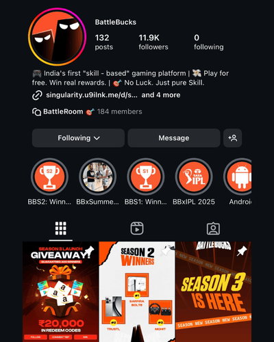

×
Esports91
Career Foundation
THE CHALLENGE
Turn a small news vertical with just 100 followers into something people actually cared about. We were essentially building everything from scratch.
THE RESULT
Built the foundation of my professional content strategy through timely news coverage, strategic memes, and collaborations with esports athletes and influencers. We grew the page to 113,000 followers in two years, and complete creative autonomy allowed me to experiment and find what worked.
THE LESSON
Good content isn't about being clever, it's about being useful.
AFK Gaming
Understanding Content
THE CHALLENGE
Learn the difference between writing and truly connecting with readers. Master the art of making people stop scrolling and actually read.
THE RESULT
Became the top-performing writer, consistently outperforming a team of 15 writers for two straight months. Specialized in explainer blogs and news articles with perfect topic selection and timing.
THE LESSON
The best gaming content doesn't just catch eyeballs, it starts conversations.

TalkEsport
My First Head Role
THE CHALLENGE
Lead content strategy, grow an audience organically, and manage a team while covering major gaming events and launching new products.
THE RESULT
Achieved consistent organic growth through fast news coverage, engaging content across formats, and successful product launches. Led coverage of major gaming events including BGIS 2023, Red Bull MEO Season 6, and multiple Krafton events.
THE LESSON
We didn't try to reach everyone. We focused on reaching the right people.
SKOR
The Web3 Learning Curve
THE CHALLENGE
Navigate an entirely new industry where my five years of gaming expertise suddenly meant nothing. Web3 audiences operate completely differently than gaming communities.
THE STRUGGLE
Spent months applying gaming content logic to Web3 audiences - and failing spectacularly. Gaming news and traditional tactics fell flat in this new world.
THE BREAKTHROUGH
Realized Web3 audiences don't want gaming content with crypto sprinkled on top. They want to understand the actual product and its value. The moment we started showcasing Agent Precision and explaining token utility, everything clicked.
THE RESULT
Successfully launched multiple Web3 initiatives with strong community engagement. Created Agent Precision mascot concept - an AI companion that felt trustworthy, not intimidating. Built a community that genuinely understood what we were building.
THE LESSON
Sometimes your biggest strength becomes your biggest blind spot. True expertise means knowing when to unlearn everything.
BattleBucks
Consultancy Project
THE CHALLENGE
Build anticipation and community for a product that doesn't exist yet, creating genuine interest without overpromising. Navigate the delicate balance of building hype while maintaining transparency.
THE RESULT
Developing comprehensive pre-launch strategy by building mystery, leveraging industry connections built over years, and clearly communicating rewards structure. Successfully acquired significant user base during beta phase.
THE LESSON
Build a community of people who want to be part of the journey, before there's even a product to show.
